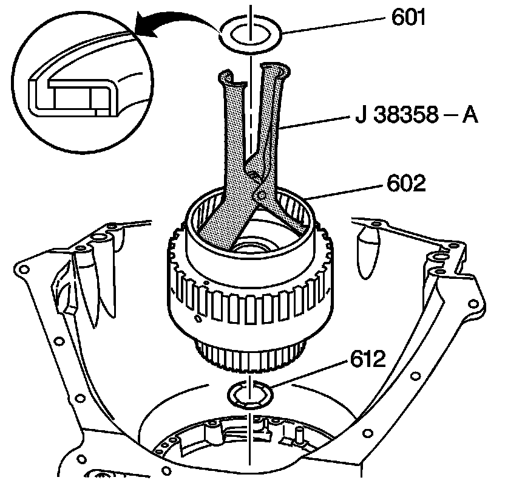

Forward Clutch Assembly Removal
Forward Clutch Assembly Removal
Tools Required
J 38358-A Forward Clutch Assembly Remover/Installer

1. Remove the overdrive carrier/forward clutch thrust bearing assembly (601). The bearing may be stuck to the overrun clutch housing assembly.
2. Using the J 38358-A, remove the forward clutch housing assembly (602).
Important: The forward clutch housing thrust washer (612) may be on top of the direct clutch housing or stuck to the bottom of the forward clutch housing assembly (602).
3. Remove the forward clutch housing thrust washer (612).